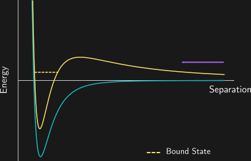
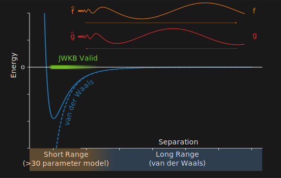
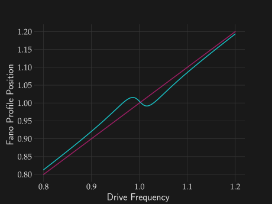

Pendula of Atomic Collisions

DWC Symposion 2021
Collisions measure atomic interactions

Cold = Slow = Sensitive

Optical Collider

Resonances are changes in the scattering
Shape resonances appear in energy: open channel
Feshbach resonances in magnetic field: Closed channel

We examine a system with both, simultaneously in play

We observe changes in the resonance profile
\[ {\color{blue}{\sigma(B, E)}} = \frac{2\pi\hbar}{mE}\sin^2\left( {\color{purple}{\delta_\text{bg}(E)}} + \tan^{-1}\left[\frac{{\color{orange}{\Gamma(E)}} / 2}{B - {\color{pink}{B_\text{res}(E)}}}\right] \right)\]

Phase Winding = Shape change

Phase Winding = Shape change
The resonance broadens

The resonance shifts

The resonance shifts

Quantum Defect Theory: Open Channel
\[ \begin{pmatrix} f \\ g \end{pmatrix} = \begin{pmatrix} C^{-1} & 0 \\ C \tan \lambda & C \end{pmatrix} \begin{pmatrix} \hat{f} \\ \hat{g} \end{pmatrix}\]
QDT parameters
\[ \begin{pmatrix} f \\ g \end{pmatrix} = \begin{pmatrix} C^{-1} & 0 \\ C \tan \lambda & C \end{pmatrix} \begin{pmatrix} \hat{f} \\ \hat{g} \end{pmatrix}\]

Broadening is wavefunction enhancement at short range
\[ \Gamma(E) = C^{-2}(E) \bar{\Gamma}_B \]
Shift is phase change
\[B_\text{res}(E) = B_0 + \frac{E}{\delta\mu} - \frac{\bar{\Gamma}_B}{2} \tan\lambda\]
Two channels $\quad\Rightarrow\quad$ two pendula

\[\ddot{\vec{x}} + \begin{bmatrix}\gamma_1&0\\0&\gamma_2\end{bmatrix}\dot{\vec{x}} + \begin{bmatrix}\omega_1^2&\nu\\\nu&\omega_2^2\end{bmatrix} \vec{x} = \begin{bmatrix}Ae^{\text{i}\omega t}\\0\end{bmatrix}\]
Resonance enhancement is broadening
Phase shift is first Resonance phase
Shift appears
